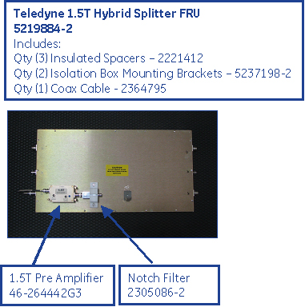
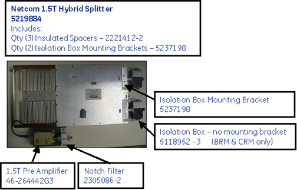
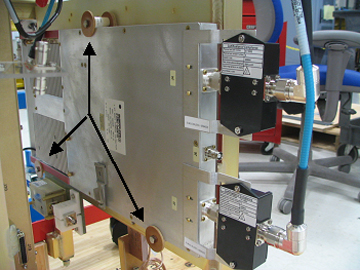
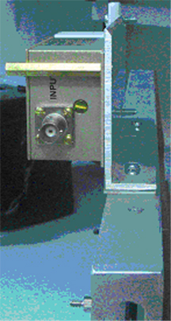

Operating Documentation
Direction 5440001-3, Rev# 6
Signa HDxt Service Methods
Module Version 7.0, Version Date 11/16/10
Operating Documentation |
| Required Persons | Preliminary Reqs | Procedure | Finalization |
|---|---|---|---|
| 1 | 30 mins | 15 mins |
The 1.5T Hybrid Splitter has two hardware designs that are interchangeable. The older design (Teledyne unit) has a solid brass enclosure with the pre-amp attached to the body of the hybrid splitter. The newer design (Netcom unit) is a similar size and consists of an exposed heatsink with the pre-amp attached to the edge of the hybrid splitter. (SeeIllustration 1 andIllustration 2 for the comparison.) When replacing hybrid splitter hardware with the same design, the pre-amp, notch filter, and isolation boxes (if installed) can be moved from the failed hybrid splitter to the new hybrid splitter. However, when replacing one hybrid splitter design with the other, there are two differences to consider:
Difference 1: The I and Q connections are reversed. If changing between the two hardware designs, make sure to connect the proper I and Q cables to the proper J3 and J4 ports on the hybrid splitter.
Difference 2: There is a 3 mm difference in width between the two designs as well as a slight difference in the mounting spacers and the isolation box mounting brackets. The FRU unit will contain three new plastic mounting spacers and two isolation box mounting brackets to ensure one hybrid splitter unit is interchangeable with the other. The replacement procedure will provide details on changing the mounting spacers and the isolation box mounting brackets if installed.
Illustration 1: 1.5T Body T/R Switch and Hybrid with Pre-Amp (Teledyne Unit)

Illustration 2: 1.5T Body T/R Switch and Hybrid with Pre-Amp and Isolation Boxes (Netcom Design)

| Item | Qty | Effectivity | Part# | Manufacturer | |
|---|---|---|---|---|---|
| Standard Nonmagnetic Tool Kit | 1 | - | - | - | |
| Item | Qty | Effectivity | Part# | Manufacturer | |
|---|---|---|---|---|---|
| Netcom 1.5T Hybrid Splitter | 1 | - | 5219884 | - | |
| Teledyne 1.5T Hybrid Splitter | 1 | - | 5219884-2 | - | |
Prior to powering down the entire Systems Cabinet, boot the Applications software down to the root level. The VRE System, which resides in the Systems Cabinet, can become corrupted if it loses power when the Applications software is active.
Right mouse click, select Service Tools, [System Restart].
Power down the Systems Cabinet when the login GUI displays.
| ||||
| Possible Equipment Damage: Verify that power is removed from RF Cabinet before removing or disconnecting Exam Room RF components. Verify Lock-Out/Tag-Out (LOTO) was performed before starting work. The RF Amplifier or TR Driver could be damaged by operating in improperly terminated loads. | ||||
LOTO the RF Cabinet according to the instructions in Lock Out / Tag Out RF Systems Cabinet and RF Amplifier.
Verify that power to the RF System/Cabinet is off by checking the fans and LEDs on both the RF Amplifier and the Driver Module.
Remove the side covers on the rear pedestal.
Disconnect the cables from both ends of the Body T/R Switch and Hybrid Assembly and the Pre-Amp. (See illustration below.)
Illustration 3: Installed Netcom Hybrid Splitter (Arrows to Insulated Mounting Spacers and Bolts) - Front View of Rear Pedestal

Loosen the three bolts holding the Body T/R Switch and Hybrid Assembly in place.
For a Netcom Hybrid Splitter, remove the top insulated spacer.
Slide the Body T/R Switch and Hybrid Assembly and the Pre-Amp out from the rear pedestal.
If the Hybrid Splitter Assembly being replaced is a different design than the FRU hybrid splitter assembly, remove the three bolts and the three insulated spacers completely, and use the spacers included with the FRU hybrid splitter assembly.
Remove the standoffs that hold the Pre-Amp to the Body T/R Switch and Hybrid Assembly. (SeeIllustration 1 orIllustration 2 for the location.)
Remove the notch filter from the Hybrid Splitter Assembly. (SeeIllustration 1 orIllustration 2 for the location.)
If the hybrid splitter being replaced is a different design than the FRU hybrid splitter, attach the insulated spacers included with the FRU Hybrid Splitter Assembly.
| NOTE: | If installing a Netcom Hybrid Splitter Assembly, do not attach the top insulated spacer at this time. |
Install the Pre-Amp to the Body T/R Switch and Hybrid Assembly by sliding the Pre-Amp onto the screws and installing the standoffs. (See the two illustrations below for the proper location.)
Illustration 4: Close Up of Netcom Hybrid Splitter Preamp Attachment

Illustration 5: 1.5T Body T/R Switch and Hybrid with Pre-Amp

Install the notch filter in the Body T/R Switch and Hybrid Assembly. (SeeIllustration 1 orIllustration 2 for the proper location.)
Install the Body T/R Switch and Hybrid Assembly by sliding the Pre-Amp into position on the rear pedestal.
Tighten the three bolts that hold it in place.
If installing a Netcom Hybrid Splitter Assembly, attach the top insulated spacer once the Hybrid Splitter Assembly is in place.
Reconnect the cables to both ends of the Body T/R Switch and Hybrid Assembly and the Pre-Amp, and confirm that the proper I and Q cables are connected to the proper J3 and J4 ports on the hybrid splitter.
| NOTE: | If the hybrid splitter being replaced is a different design than the FRU hybrid splitter and has the isolation box installed, change the isolation box brackets with the brackets included with the FRU assembly. (Refer to Isolation Box Replacement for details.) |
Reinstall the side covers on the rear pedestal.
Restore power to the system, and remove LOTO from the RF Cabinet.
Perform a TR Dynamic Disable Calibration.
Complete a body and head scan.
Confirm that the system is functional.